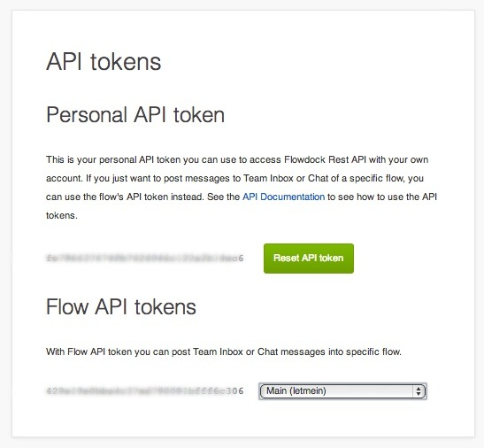

The flowdock notification send to flowdock.
You need define the API token. It is purposely called Flow API Token and not Flowdock API Token to make it more obvious for user which one of the two tokens we expect:

If you noticed default Gravatar icon in your Flowdock notifications you may want to add Errbit icon for email that is set in ERRBIT_EMAIL_FROM. You don’t need to approve or authorize it on Flowdock because it is used only for an icon.